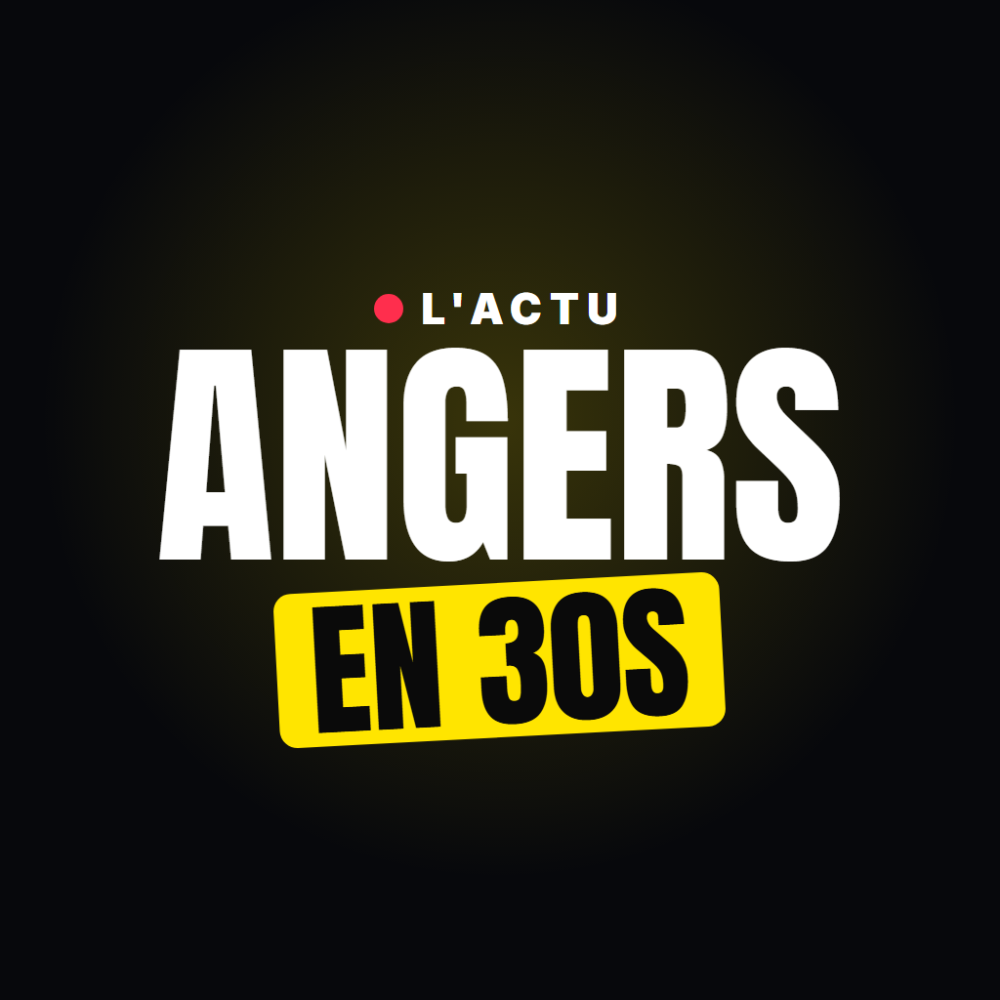

Angers en 30s
L'actualité d'Angers et de l'Anjou en vidéos courtes, sourcées et vérifiées, publiées sur TikTok.
Cet outil personnel prépare les vidéos du compte et les dépose dans les brouillons TikTok du compte « Angers en 30s ». Chaque vidéo est relue et publiée à la main par l'éditeur du compte.
Connecter le compte TikTok · Politique de confidentialité · Conditions d'utilisation
Angers local news in short, sourced videos on TikTok. This personal tool uploads the account's videos to its TikTok drafts; each video is reviewed and posted manually. Privacy Policy · Terms of Service